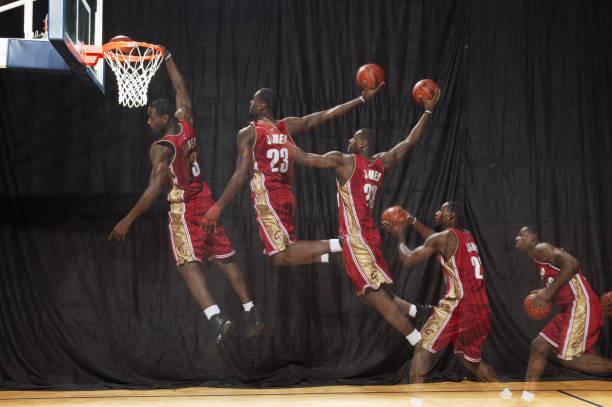

雷霸龍·瑞蒙·詹姆士一世（英語:LeBron Raymone James Sr. 1984年12月30日）是美國職業籃球運動員，目前效力於NBA洛杉磯湖人。他被公認是NBA歷史上最偉大球員之一，並經常在史上最偉大籃球員的爭論中被拿來與麥可·喬丹相互比較。 James曾效力過克里夫蘭騎士和邁阿密熱火，是NBA歷史上第一位率領三支不同球隊奪冠，且都拿下NBA總決賽最有價值球員的球員。 James曾挺進NBA總決賽十次，其中從2011年到2018年連續八年率領球隊挺進總決賽。 James擁有四座NBA總冠軍、四次NBA最有價值球員、四次總決賽最有價值球員以及兩枚奧運金牌。同時他也是NBA季後賽歷史得分王，也是例行賽歷史第三高總得分與第八高總助攻數的球員。
James的職業生涯已經入選NBA年度第一隊十三次、NBA年度防守第一隊五次以及全明星賽十七次，並獲選為全明星賽最有價值球員三次。
童年時期的LeBron James家境貧窮，過著經常搬家的生活，母親在其小時候，因為家境不得已，將其送至寄養家庭，答應他若家境穩定一定接他回家。對此LeBron James仍愛著她母親，因為在其小時候，他的母親盡力給了他所有他想要的東西，以及無止盡的愛，加上母親又是他唯一的親人，因此與母親的相處關係一直非常和諧。然而也因為寄養家庭的關係，他開始學著自律生活，在5年級的時候，就從90天缺席，變成0缺席，也聽從教練的建議，練習用自己不習慣的手 運球，他與他的隊友，逐漸在社區裡闖下了不敗聲，
還在13歲時，就拿到一個全國冠軍，
他也從此朝著正當的路走去。
LeBron James就讀於天主教會開辦的學校聖文森及聖瑪麗高中，一年級時，以21分6籃板的成績帶領聖文森及聖瑪麗高中（St.Vincent-St.Mary）以27勝0敗的巨大優勢贏得了俄亥俄州三級聯賽冠軍（Ohio Division III State Champion）。
在高中的第三年，LeBron James成為第一位登上運動畫刊（Sports Illustrated）封面的高中籃球員，並以29分8.3個籃板5.7次助攻3.3個抄截的成績蟬聯俄亥俄州籃球先生及USA Today高中全美第一隊，並且成為第一位得到Gatorade National Player of the Year Award的高三學生，聖文森及聖瑪麗高中本季拿到23勝4負的成績，卻在二級聯賽冠軍賽（Ohio Division II State Championship）時，輸給了Roger Bacon。
克里夫蘭騎士（2003－2010)
2003-04年賽季，LeBron James在2003年6月26日的NBA選秀會上以第一輪第一順位被克里夫蘭騎士選中。
10月29日，生涯的第一場比賽面對沙加緬度國王，取得25分、6籃板、9助攻及60%的投籃命中率（20投12中）。11月29日，面對曼菲斯灰熊，攻下33分，成為NBA史上最年輕達成單場30分的球員（18歲334天）。2004年3月27日，對戰紐澤西籃網，取得41分，成為NBA史上最年輕達成單場40分的球員（19歲88天）。LeBron James在新秀賽季場均20.9分、5.5籃板、5.9助攻[11]，是繼辛辛那提皇家（國王前身）後衛Oscar Robertson及Michael Jordan後，NBA史上第三位於新秀球季就能得到平均「20分、5籃板、5助攻」的球員。這個賽季騎士的成績是35勝47負，比上季多贏得18場比賽，未能進季後賽。

2005-06年賽季，2006年2月19日，LeBron James再次入選全明星賽東區先發，送出29分、6籃板、2助攻的表現，協助東區明星隊以122-120擊敗西區明星隊，他也獲選為明星賽MVP，以21歲51天成為史上最年輕的明星賽最有價值球員。
3月22日~4月8日，LeBron James連續九場比賽得分在35分以上，自1970年代起，只有Michael Jordan及Kobe Bryant才能達成這項記錄。LeBron James在本賽季平均取得31.4分、7.0籃板、6.6助攻，成為NBA史上最年輕達成單季平均超過30分的球員（21歲107天）。同時，他也是史上第四位單季平均在30分、7籃板及6助攻以上的球員。騎士本季戰績50勝32敗，以東區第四種子晉級季後賽，也是1998年以來首次晉級，首輪對上華盛頓巫師。4月22日，他在生涯的第一場季後賽取得32分、11籃板、11助攻的「大三元」，騎士也以97-86擊敗對手，他是繼Johnny McCarthy及Magic Johnson後，第三位在生涯首場季後賽中取得大三元的球員，最終騎士六場比賽將巫師淘汰。他在季後賽平均攻下30.8分、8.1籃板、5.8助攻。不過在第二輪，騎士即被底特律活塞淘汰出局。
2006-07年賽季，2007年2月18日，LeBron James連續第三年獲選為明星賽東區先發前鋒，他取得28分、6個籃板及6次助攻，但最後東區以132比153不敵西區。此賽季騎士以50勝32敗的成績成為東區第二種子晉級季後賽。首輪直落4橫掃華盛頓巫師。第二輪遇到的對手是紐澤西籃網，騎士第六戰在客場88比72大勝對手，4-2將紐澤西籃網淘汰出局，這也是騎士自1992年以後首次晉級東區決賽。東區決賽他們面對到的對手是底特律活塞，活塞已連續第四年都至少打進東區決賽，並曾在2004年拿過總冠軍。騎士前兩戰在客場皆以76比79落敗，但最後他們在第六戰以98比82勝出，連勝四場晉級總決賽。LeBron James在第五場比賽表現出色，個人取得48分、9籃板、7助攻，並且還包辦球隊最後30分中的29分，在歷經了二度延長後，以109比107擊敗了活塞，騎士也獲得了隊史上的第一個東區冠軍。在總決賽中，面對的對手是聖安東尼奧馬刺，最後騎士遭到馬刺直落四場橫掃擊敗，此冠軍戰也創下了歷年來轉播收視次低紀錄。雷霸龍在總決賽中遭到馬刺的嚴防，表現不盡理想，平均得分是22.0分、7.0籃板、6.8助攻，和前三輪平均25.8分、8.3籃板、8.3助攻的表現有段落差。整個季後賽的平均則是25.1分、8.1籃板、8.0助攻。LeBron James也成為第一位騎士隊的非後衛球員達成連續8場比賽單場至少都有7次助攻。
2007-08年賽季，2008年2月，LeBron James連續4年入選東區明星隊，在NBA明星賽上陣。他成為比賽中的最有價值球員，以27分、8個籃板、9個助攻、2個抄截及2個阻攻協助東區以134-128擊敗西區。2月27日，他在對波士頓塞爾提克的比賽中，取得了個人生涯的第1萬分。他僅以23歲59天，成為最年輕達成1萬分的球員，此外他花了368場完成1萬分，是NBA第九最快的記錄。3月21日對多倫多暴龍的比賽中取得29分，取代Brad Daugherty成為騎士總得分最高的球員，以10,414分超過多赫蒂的10389分。雷霸龍是2007-08球季例行賽平均得分最高的球員，不過在例行賽MVP不敵Kobe Bryant和Chris Paul之下得第三。但成為了NBA的得分王。LeBron以45勝37負成績帶領球隊晉身季後賽，在第一圈面對華盛頓巫師，以總場數4-2擊敗對手。在第二圈面對波士頓塞爾提克，騎士迫使塞爾提克進入第七場比賽，並與Paul Pierce對飆，分別砍下41分與45分，但最後騎士以3比4敗北，未能再進一步。
邁阿密熱火（2010－2014）
在2009-10 年球季結束後，LeBron James成為自由球員，傳聞芝加哥公牛、邁阿密熱火、紐約尼克、達拉斯小牛及洛杉磯快艇皆對他有極大的興趣。2010年7月8日，LeBron James透過ESPN舉辦的全國直播特別節目「The Decision」宣布與熱火隊簽約，將與Dwyane Wade和Chris Bosh組成熱火三巨頭。此事讓克里夫蘭騎士隊的球迷為之氣結，甚至公開燒毀市面販售的他的球衣。他也成為當時全世界不受歡迎的運動員，創下了前一季MVP轉隊紀錄，目前還是歷史唯一一人。
2010-11年賽季，LeBron James第七次入選明星賽，砍下29分、12個籃板和10次助攻，成為繼Michael Jordan之後，在全明星賽上第2個拿到大三元的球員。LeBron James替熱火首場上陣賽事面對波士頓塞爾蒂克，雖然他獨自得到31分，但在兩名主力 Bosh及Wade失準的狀況下，以80-88的結果負於對手。12月18日對紐約尼克的比賽中取得32分、11個籃板及10次助攻取得當季第二個大三元。12月3日，熱火隊作客克里夫蘭騎士的比賽中，詹姆士對老東家取得了38分、5個籃板和8次助攻，熱火隊118比90擊敗騎士。James在例行賽平均取得26.7分，在聯盟排行第二，但未能成功衛冕MVP獎項。在季後賽四強第五場比賽對塞爾提克與Wade合共攻入67分，協助球隊在第五場賽事反勝對手，以4比1晉級。在東區決賽對芝加哥公牛第五場賽事中，取得28分之餘，完場前更阻攻德Derrick Rose的三分球，協助球隊以4比1打進總決賽。在總決賽中，熱火即使在取下了關鍵的第三場比賽，使熱火2比1領先小牛，但在第四場對小牛的比賽，James11投僅僅命中3球，得到職業生涯季後賽最低的8分，讓總比分變成2比2，最終以2比4輸給小牛，個人職業生涯第二次與總冠軍擦身而過。
2011-12年賽季，James第八次入選明星賽，和西區Kevin Durant同時得到全場的最高分36分以及6個籃板和7次助攻。LeBron James至今8場明星賽共得207分，平均25.9分史上最高。2012年2月4日，他對費城76人比賽時，得到19分。職業生涯總得分達到18004分，以27歲36天超越Kobe Bryant的28歲156天。成為NBA總得分最年輕達成18000分的球員。及後在東區決賽面對波士頓塞爾提克，前五戰打完熱火是2比3落後，第六場James攻下45分，摘下15個籃板以及傳出5次助攻，幫助球隊取得勝利（他也是繼1964年Wilt Chamberlain的50分、15籃板、6助攻以來，第一個在季後賽能有至少45-15-5的球員）。第七戰在主場獲勝再次晉級總決賽，對手是由KD等三少領軍的奧克拉荷馬城雷霆。在總決賽中，熱火隊先在客場遭雷霆逆轉輸掉第一戰。但第二戰他們在客場拿下勝利，第三到第五戰回到主場又拿下三連勝，以總比分4比1奪得總冠軍。James在第五戰得到大三元（26分、11籃板、13助攻），也是史上第七位總決賽至少有兩次大三元的球員。James總決賽平均28.6分、10.2籃板、7.4助攻的全面表現也讓他獲頒總決賽MVP，而他在整個季後賽23場比賽的平均則是30.3分、9.7籃板、5.6助攻。
2012-13年賽季，2013年1月16日，對戰金州勇士，全場取得25分、10次助攻，達成生涯得分兩萬分加五千次助攻，取代KOBE（29歲122天），成為NBA史上最年輕的兩萬分球員（28歲又17天）。2月4日，對上夏洛特山貓，整場比賽14投13中，命中率高達92.9%，取得31分、8籃板、8助攻，成為繼1967年的Wilt Chamberlain後第一位達成單場至少30分、8籃板、8助攻，命中率又在90%以上的球員。James在2月3日－2月12日的連續6場比賽，皆有至少30分和60%的投籃命中率，創下NBA的新紀錄（舊紀錄是1979年的Adrian Dantley和1982年的Moses Malone的連5場）。2月26日，面對沙加緬度國王，攻下40分還傳出生涯新高的16次助攻，帶領球隊在二度延長中取得勝利。James也是NBA史上第四位達成單場至少40分加15助攻的球員（前一位是Kevin Johnson在1994年4月3日的42分17助攻）。他也率領球隊在2月3日~3月25日締造了NBA史上第二長的27連勝，他在連勝期間的平均數據是優異的27.0分、8.1籃板、8.0助攻、1.9抄截、57.5%命中率。最終熱火隊在本賽季創下了隊史最佳的單季66勝。然而在總決賽中，James外線準頭失常，導致熱火一路苦戰，並於第五場遭受挫敗（系列賽2比3落後馬刺），熱火第六戰一路落後瀕臨淘汰，最後靠著Ray Allen的關鍵三分球追平比數，進入延長賽。使得熱火完成傳奇般的獲勝。
熱火與馬刺進入第七戰，搶七戰James逆勢反彈，最終在37分、12籃板和4助攻的表現下，幫助熱火隊4:3擊敗聖安東尼奧馬刺隊衛冕總冠軍。37分追平了搶七戰最高得分紀錄。7場系列賽，詹姆士平均25.3分、10.9籃板、外加7次助攻再次獲得NBA總決賽MVP。他包辦了季賽和總冠軍賽的MVP。
重返克里夫蘭騎士（2014－2018）
2014年7月11日，跳出合約成為自由球員。LeBron James宣布將回到職業生涯的起點克里夫蘭騎士。與克里夫蘭騎士簽下2年4221.7萬美元合約，第二年為球員選擇權。2014-15年賽季，James成功帶領騎士以東區第二殺入季後賽。季後賽首輪以4比0淘汰塞爾提克。東區準決賽中，最後以4比2淘汰芝加哥公牛。東區決賽中，第三場詹姆士37分18籃板13助攻的大三元演出，是季後賽生涯12次大三元，超越Jason Kidd，也是NBA史上僅次於Magic Johnson的30次。最後以4比0橫掃老鷹，帶領騎士睽違8年再度進入了總決賽（也是LeBron James本人連續五年都打進了總冠軍賽）在總冠軍系列擁有平均攻下35.8分、13.3籃板與8.8助攻的數據，不過因失去了球隊2大主力（Kyrie Irving、Kevin Love），最終以2比4敗給惜敗金州勇士。
2015年夏天，James宣布不執行球員選擇權跳出合約，但表態願意續留騎士，最後以2年4760萬美元與騎士簽約。2015-16年賽季，騎士以57勝25敗連莊中央區龍頭，季後賽第一輪直落4橫掃底特律活塞，接著在東區準決賽直落4橫掃老鷹。東區決賽，騎士碰上暴龍，最終以4比2連2年在東區封王，James成為史上第8位連續6年挺進總冠軍賽的球員。總冠軍賽，騎士再度碰上勇士，打滿七戰戰勝勇士奪得總冠軍(騎士的歷史第一冠)。LeBron James拿下個人第3個總決賽MVP。
2016-17年賽季，12月11日，主場迎戰夏洛特黃蜂，James全場攻下賽季新高44分，以116比105搶下4連勝。他出手24次進17球（包括5記外線），攻下44分、9籃板、10助攻、3抄截。這是他生涯第9次單場至少「40分、10助攻」，追平Michael Jordan，並列史上第5。另外，James完成生涯第7000次助攻，成為史上第一位生涯累積破2.7萬分、7000助攻、7000籃板的球員。2017年2月5日，在麥迪遜花園廣場轟下32分，率領騎士以111比104擊敗尼克，個人也達成生涯28000分里程碑，成為史上最年輕達成此成就的球員（32歲37天）。2月6日，LeBron James成為NBA現役球員中，得分、助攻、抄截三項數據進入首20名內的球員。這個賽季騎士以東部第二的種子結束了賽季，James場均26.4分，籃板8.6次，助攻8.7次，在季後賽第一輪的第三場比賽對上溜馬，被對手大幅領先25分，是NBA季後賽歷史上最大的半場結果，不過靠著James的41分13個籃板和12次助攻大逆轉奪勝。東部決賽的第5場比賽對上塞爾提克，他拿下35分，超越Michael Jordan成為NBA季後賽總得分王。騎士以4比1擊敗塞爾提克，前進總冠軍賽。
2月19日，明星賽開打，由LeBron隊對上Stephen隊，LeBron拿下全場最高29分，包括最後34.5秒得分逆轉戰局，率隊以148比145擊敗Curry領銜的隊伍，賽後第3度獲封明星賽MVP。2月28日，LeBron生涯助攻數突破8000大關，成為NBA歷史上首位達成30,000分8000籃板8000助攻的球員。3月31日，騎士主場迎戰鵜鶘，他攻下27分，生涯連續867場比賽繳出雙位數得分，超越Michael Jordan，成為史上第一，也是他生涯第941場比賽得分突破20分大關，追平KOBE，並列史上第3，聯盟史上第2是天勾賈霸的1122場，Karl Malone則是史上第一的1134場。4月7日，客場迎戰76人，他攻下44分11籃板11助攻，收穫本季第18、生涯第73次大三元，更以33歲又8天超過KOBE34歲又185天成為史上最年輕得到3萬1千分的球員。
4月29日，季後賽首輪騎士主場迎戰溜馬，James生涯第7次打搶七大戰，上半場攻下26分5助攻4籃板2抄截，讓他成為史上第一位在季後賽有200場得分超過20分的球員。5月27日，James打滿全場48分鐘，帶領騎士在東區決賽第七戰中擊敗波士頓賽爾提克，生涯自2011年起連續八次奪得東區冠軍，累計九次晉級總決賽。總冠軍賽首戰，歷經延長賽後不敵勇士，但James狂飆51分，創下他在總冠軍賽個人得分的生涯新高，在NBA排名上名列第5。第二場，他成功超越賈霸的1317分，成為史上總冠軍賽得分第二多的球員。
洛杉磯湖人（2018－至今）
2018年7月9日，LeBron James和洛杉磯湖人以4年1.54億美元簽下合約。
11月15日，在主場對拓荒者比賽中取得44分10籃板9助攻，為加盟湖人後的得分新高，同時生涯累積得分達到31425分，超越張伯倫，獨居史上第5。2019年3月7日，在主場對拓荒者比賽中取得31分，主場以99-115不敵金塊，職業生涯例行賽總得分來到32311分，超越Michael Jordan升至歷史第4。3月22日，在以106-111輸給布魯克林籃網之後，湖人隊在季後賽中確定被淘汰出局，這也是LeBron James自2004-05 NBA賽季以來首次錯失季後賽。
11月26日，湖人客場以114比104擊敗馬刺，他攻下33分並投進4記三分球，三分球命中數超越Peja Stojaković躍居史上第18名，達成12000進球數的紀錄。11月28日，而他在面對鵜鶘攻下29分11助攻5籃板2抄截，生涯總得分達到33008分，成為史上第4位突破33000分的球員，更創下史上最年輕33000分的紀錄。12月30日，35歲生日當天，主場坐鎮達拉斯獨行俠，LeBron首節送出4次助攻，這讓他生涯助攻數累積達到9000次，成為聯盟史上第一位完成至少33000分、9000籃板、9000助攻的球員。同天，LeBron也也獲選美聯社近十年最優秀的男運動員。2020年1月26日，湖人作客對決76人，詹姆士在比賽中第3節超越Kobe Bryant的33643分，榮登NBA史上生涯累積得分榜第3位，2020年3月7日，他也在對公鹿的第二節利用罰球機會拿到第7分和第8分，使得他生涯總得分正式突破34000分，成為史上第3位達到34000分的球員，同時更以35歲又68天刷新最年輕紀錄。
2020年8月15日，隨著湖人在複賽後最後一場例行賽，結果以122比136不敵沙加緬度國王，LeBron上場15分鐘攻下17分、4次助攻與3個籃板，最終以場均10.2次助攻，生涯17年來首次拿下年度助攻王，同時也是Nash後，史上第2位在35歲之後平均助攻達到雙位數的球員，另一方面，LeBron生涯已經連續16個賽季平均得到至少25分，同樣刷新個人保持的紀錄；而他連續17個賽季至少20分則是追平天勾賈霸和郵差的紀錄，並列史上第一。此外，他本季總得分也達到1698分，這是他連續17個賽季至少拿到1500分，追平賈霸的紀錄，並列史上第一。2020年9月27日，西區冠軍賽第5戰，LeBron全場攻下38分16籃板10助攻，帶領湖人淘汰金塊，挺進總冠軍賽。這是湖人繼2009-10年之後重新踏上總冠軍賽舞台，也是近10年來第9次打進總冠軍賽。值得一提的是在騎士、熱火與湖人3支不同隊伍，且5位不同的教練麾下達成10度闖進總冠軍的第一人。 2020年10月11日，LeBron帶領洛杉磯湖人成功衛冕2020NBA總冠軍，並以場均29.8分11.8籃板8.5助攻奪得生涯第4座NBA總決賽最有價值球員，成為歷史首位在三個球團獲得總決賽最有價值球員榮譽的球員。
2021年2月20日，LeBron在對籃網的比賽上半場攻下17分，這讓他生涯總得分突破35000分大關，成為史上第3位總得分達到35000分的球員。他也以36歲又51天成為最年輕拿到35000分的球員，先前紀錄是賈霸的38歲又350天；而LeBron僅用了1295場比賽就達成，也是史上最快紀錄，賈霸是用了1323場，Malone1369場。